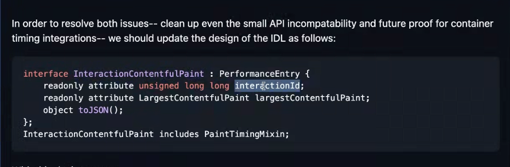
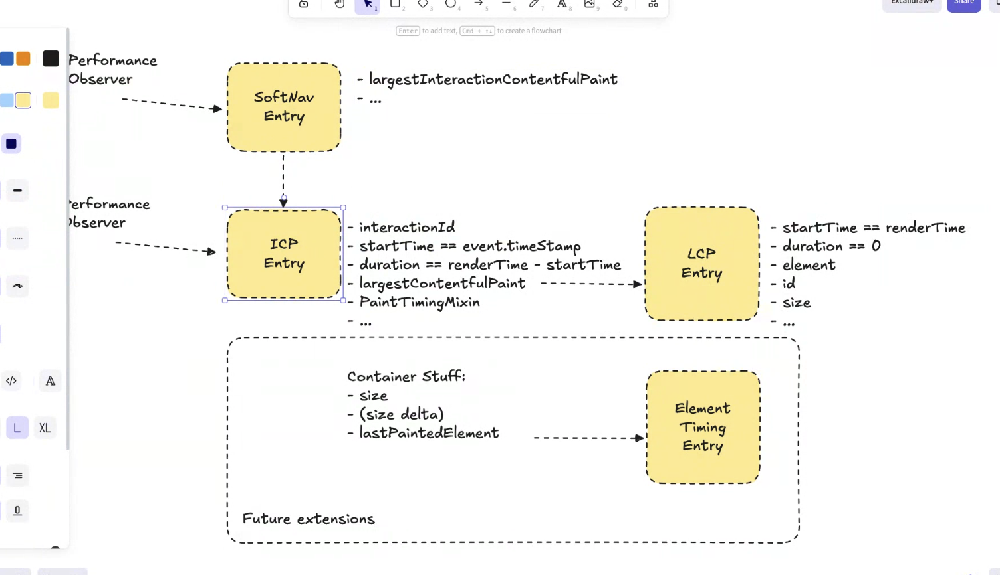

Participants
- Adrian de la Rosa
- Franco Vieira de Souza
- Tomas Bertet
- Gouhui Deng
- Barry Pollard
- Jose Depena Paz
- Andy Luhrs
- Nic Jansma
- Yoav Weiss
- Bas Schouten
- Scott Haseley
- Michal Mocny
- Gilberto Cochi
- Giacomo Zecchini
- Carine Bournez
Admin
- Next meeting: Jun 4, 2026
- Rechartering extension
- Current extension lasts until June 1st, will need to extend slightly further
- Group meetings - aiming to schedule 2x full days (aiming for Monday and Tuesday)
- 26 October 2026, 08:30 – 30 October 2026, 18:00 GMT
- Clayton Hotel Burlington Road, Dublin, Ireland
- Registration will open mid-July 2026
Minutes
- Andy: Borrowing concepts from existing paradigms in specs
- … Measuring time from when my JS ran to when paint happened
- … We have standard PaintTiming, LoAF, EventTiming, ElementTiming
- … Comparison to ContainerTiming
- … How developer has to think about DOM elements vs. this
- … performance.markPaintTime(), UA would fire at next paint from when this was run
- … More intentional way to when script ran to paint occurred
- … Ways of doing this today, e.g. double rAF()
- … Or rAF + setTimeout(), but there’s some non-determinism
- … Relatively simple workaround, but not as reliable, not discoverable
- … e.g. double rAF() is not intuitive
- … Carries all the same concepts as existing paintTime markers
- … vs. things like requestPostAnimationFrame() but this was shelved and we thought about reviving, but looked at marking model instead
- Michal: Mention double rAF() and requestPostAnimationFrame(). drAF() was almost a scheduling primitive. rAF() + yield, or + race
- … Is this a scheduling primitive, or just a measurement primitive?
- Andy: Just a measurement primitive
- Michal: Double rAF() was used as a proxy for measurements sometime.
- Andy: And when using it for that, it can be inaccurate
- Michal: Related, folks have requested addEventListener() animation frame
- … Existing rAF() both forces and listens for frame
- … markPaintTime() would only listen, not force, correct?
- Andy: Correct
- Michal: If there were more use cases for implementation or scheduling, that could be an alternative, that’s just background details.
- … Back to measurement. If you don’t call markPaintTime(), would the observer fire entries for every paint, or just those that are marked?
- Andy: Only the paints that are market
- Yoav: That would be the next paint after this was called?
- Andy: Yes
- Michal: Some of the existing APIs, “if paint scheduled after this task then measure until the end”, such as LoAF and EventTiming
- … I suspect it wouldn’t make sense if mark and the page is idle, look for painting opportunities?
- Andy: I think I’d need to think about that a bit more yes
- Michal: There’s an assumption that paint will be scheduled
- Andy: I don’t think we handle if there’s not a paint w/in reasonable timeframe, how do we handle that?
- Michal: Other thing, there’s a related discussion we’ve had recently, for overall Performance Timeline it would be useful to group/report by timing. There’s a bunch of things that are related to paint.
- … Useful to add to that set an explicit developer mark
- … Would be nice to say we have all these paint timings but only the developer asked for one marked
- … markPaintTiming() is missing today, but the entry is maybe not needed?
- … I’ll link to the other issues
- Andy: I’d be worried it fires so often we’d be painting a ton
- Michal: Now you’re just explicitly marking a few more paints
- … Consolidated stream of these things
- Scott: In this example, what would be the difference between adding an element timing tag for this HTML example
- Andy: Probably nothing for this simplified example, but there’s enough cases with other middleware libraries that finding the right thing would be challenging
- … There’s a request for someone to add a Container Timing comparison too
- Scott: Having that in the explainer would be helpful thanks
- Franco: StartTime is from whoever called markPaintTime() until the paint, correct?
- Andy: Yes
- Franco: If you have more than one place, wouldn’t it generate confusion about whose entries are added
- Andy: I think so, but that’s an existing problem with performance.mark() and measure()?
- Michal: Given that question/comparison, did you think about exposing PaintTiming to marks? Developers could name their marks and get PT from their marks?
- Yoav: Does it make sense to also consider paint causality here?
- … Tying paints to tasks or elements that caused them
- … Wondering if there’s something here that’s a primitive
- … Weigh use-case
- … Assume that this could be relevant for e.g. images, image decoding that can skip a frame
- Andy: I think there’s a case where there’s a React app w/ a bunch of different components rendering, but there’s a state change that happens and it’s not something we actually care about
- Yoav: Not sure it’s just a question of API shape, but whether we’re doing some form of task attribution / async context or some tracking of paint to its source
- Michal: Immediate thoughts, EventTiming will automatically get recorded for every interaction and we’d get the next paint immediately. Direct analogy here, you want next paint, some sort of sync blip from rendering work
- … Distinct question, Yoav points out task attribution can identify the stream
- … Both are useful potentially
- … Second to Yoav, proposing Interaction Contentful Paint, automatically attribute. Programmatic navigation wouldn’t trigger this.
- … But maybe with Navigation API, hook, we could determine if that was caused by an interaction or not
- … When exposing Performance Entry, all you’d need is a mechanism similar to that. Callback comes w/ context wrapper.
- … Opens up arbitrary rendering measurement, as opposed to just interactions
- Scott: Similarity between this and event listener for something like next paint. There were security concerns in the past, e.g. from IFRAMES of paint info to determine what is going on.
- … Do those concerns exist here?
- … Are we opening ourselves up to some security risk here?
- Barry: If you just mark paint, you’re measuring other JavaScript on your own.
- Andy: Security one I’m not sure, is there historical context?
- Yoav: A lot of the concern was around :visited links, don’t know if there were plans of somehow working around that and fixing and making them less harmful
- … Side note, worthwhile to loop in security folks to see what they say
- Scott: If there’s another paint at the same time, could you monitor the stream of paints happening, for fingerprinting?
- Michal: If your JavaScript ran, was it the thing causing rendering? There might’ve been another one scheduled already.
- … If your code ran, you played a role w/out changing DOM
- … Maybe what you should be saying is that I’m marking work. Automatic container timing?
- … I’m doing some work, and if it has an effect on rendering, I want an easier time measuring that
- … Unless it caused a Long Task so it triggered a LoAF
Soft Navigations - Michal
- Michal: Working on Soft Nav and Interaction Contentful Paint in Chrome / Origin Trial
- … One more changes we want to make as we head towards shipping in Chromium
- … Current interface for ICP, models LCP
- … We don’t actually extend LCP, but we borrow the same attributes
- … Only if we have a new element larger size than previous, we’d emit
- … However, how it works under the hood, we use task attribution to see all parts updated by interaction
- … Can mark DOM owned by interaction
- … Paint is just a global single thing that happened
- … Elements that paint you can map to interaction that owns that part of the DOM
- … Interaction creates a container, then we do timing
- … In Chromium’s implementation, we’re tracking all paints for this interaction, rects, but then we filter down to elements that are largest
- … We expect the direction these things are going with CT starting OT, and that model for PEs, better model for ET
- … Would be good to future proof ourselves
- … LCP uses startTime differently than ICP, uses time it happens and duration 0
- … ICP’s duration is from interaction, startTime is from interaction, duration is when paint happened
- … Also CT has a size, of whole container, as opposed to LCP which is size of a single elements, effective visual size
- … If we ship the current interface, some of these values model LCP semantics, and they can’t model CT semantics
- … We could fix some of these

height: 344.00px; margin-left: 0.00px; margin-top: 0.00px; transform: rotate(0.00rad) translateZ(0px); -webkit-transform: rotate(0.00rad) translateZ(0px);" title="">- … All nested metadata from LCP entry goes into a nested largestContentfulPaint entry
- … This type of LCP will not fire on main performance observer, will only be available via interactionCP
- … All LCP attributes can be reported in same semantics
- … Get visually complete of whole interaction
- Nic: The ICP entry start is the start of the interaction, duration is until the paint, and LCP start is the paint?
- Michal:

height: 866.00px; margin-left: 0.00px; margin-top: 0.00px; transform: rotate(0.00rad) translateZ(0px); -webkit-transform: rotate(0.00rad) translateZ(0px);" title=""> - … Small change that solves a few issues
- … The current version in Chromium only reports these ICP entries when an LCP changes
- … Once we start reporting all ICPs, we’d get ICP updates even when LCP doesn’t change
- … In v1 ICP duration will be LCP start time, but that will break down the road
- … related question: what should these nested entries represent? At the moment we only set that value once when the soft navigation is added, and we don’t change it
- … but considering changing Chromium to align with the spec
- … Thinking that the softnav entry should contain the most recent ICP, so you don’t need to buffer them. Seems convenient, but weird that the value would change over time
- …
- Yoav: We are doing that in NavigationTiming. LoadEvent, DCL.
- … In PerformanceTimeline, not PO. Filling in values as they come.
- … Gap between latest NT and and older version
- … At the same time it’s not idea from API design perspective, an attribute is expected to stay the same over time.
- … With Speculative Load Measurement API, to change the attribute to a getSpeculations() method where you expect a different thing every time.
- … Maybe this same pattern can be repeated here
- … On Soft Nav entry you have getLatestICP()
- Bas: I agree
- Michal: Biggest problem with NavTiming, you have to poll when those values change
- … We don’t actually fire PO so we don’t know
- Yoav: You have to poll
- Michal: You have a choice to subscribe to ICP observer, you’d get a notification when this changes
- … Only useful if you want to be lazy
- … Think it’s a good suggestion
- Bas: If we’re going to do something unprecedented, doing it in a precedented way is a good way of doing it
- Franco: I feel like having a method on entries, could drive people towards polling patterns
- … Feel a bit sketched out, making them dynamic, pushing them towards polling patterns
- Michal: Could polyfill this via an observer for ICP, filtering on interaction ID, and calling takeRecords
- … Cache this an optimize
- Bas: A thing to be said if someone’s not observing ICP, then you can stop collecting or creating them as soon as soft nav event has fired
- Yoav: Ditto
- … When used correctly, this will push people off of polling and onto just getting value when they need it.
- Michal: If you want polling, there’s a more performant way of just observing
- … Separate question, every time I interact, soft navigation, I would consider the old navigation is unloaded
- … If you only care about interaction, you may want to continue measuring all things on the latest page
- Bas: Single interaction ID chain of soft navs?
- Michal: Paints can
- … Search box, characters in search box, loading placeholder, a widget happening in corner
- … If I navigate, and main contents change, widget could still be rendering
- … Maybe I’ve already moved to a 3rd navigation
- Bas: Race condition between user navigate and previous interaction and paints completed
- Michal: Correct
- … A bit of an ambiguity, if I only care of Soft Navs, when ready for beacon, I asked for last LCP element, I’m locking it in.
- … Read this value, it has an LCP
- … If I never subscribe to ICP I won’t get subsequent ones
- … I think it actually helps for that use-case
- … The interactions' paint data could keep going, but soft nav’s paint data might stop when navigation stops
- … Registering PO for all interactions, you’ll keep getting them. But if you only care about soft navs, maybe we don’t need to measure them anymore.
- Bas: In complex case, get in trouble because async context, tracking which paints belong to which interaction?
- … Feels like it gets pretty hairy
- … Container of the thing you’re painting could change
- … Despite things in widget being part of an earlier interaction
- … Widget becomes part of Soft Nav, but maybe part of earlier interaction
- … If I interact with widget,it will have the same navigation ID, but it won’t necessarily be the interaction that would be part of the soft navigation
- Bas: I wonder if the tracking is always accurate